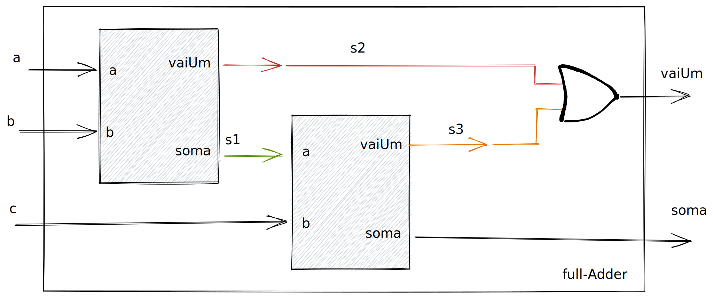

Lab 6: Adders¶
Neste laboratório iremos desenvolver somadores que serão utilizados no desenvolvimento da unidade lógica aritmética da nossa CPU.
Half e Full adder¶
Vamos comecar implementando as duas unidades básicas são utilizadas em um somador: half-adder e full-adder.
Reutilizando componente ( Structural Modeling )¶
Info
Para mais detalhes acesse a documentação do MyHDL
A modelagem estrutural em hardware pode ser entendida como a utilização de diferentes módulos para construir um novo. Lembre que estamos desenvolvendo um hardware e não criando um software, e que esse hardware deve ser sintetizável (possível de implementar na FPGA).
Para isso devemos criar "instancias" de um componente, por exemplo: Podemos criar uma instância do halfAdder e outra do fullAdder para implementarmos um somador de dois bits. Podemos pensar nessas instâncias como "ir até o armário do laboratório e pegar um CI de cada tipo", cada instância é executada em paralelo e consume recursos próprios, quanto mais instâncias, mais complexo é o hardware e mais recursos são utilizados.
halfAdder¶
Como exemplo do processo vamos reimplementar o fullAdder, mas agora utilizando dois halfAdders, como demonstrado no diagrama a seguir:

O código em python fica:
@block
def fullAdder(a, b, c, q, carry):
s0 = Signal(bool(0)) # (1)
s1 = Signal(bool(0))
s2 = Signal(bool(0))
half_1 = halfAdder(a, b, s0, s1) # (2)
half_2 = halfAdder(c, s0, q, s2) # (3)
@always_comb
def comb():
carry.next = s1 | s2 # (4)
return instances()
- Sinais internos para conexão
- Primeira instancia do half adder
- Segunda instancia do half adder
- Implementação da porta
orentre as saídas doscarrys
Notem que na implementação anterior utilizamos três sinais binários interno (s0, s1 e s2) no módulo para a conexão entre os componentes e que a lógica do OR entre os carrys é implementada em um bloco combinacional def comb.
Podemos melhorar um pouco o código anterior se no lugar dos sinais s0, s1 e s2 criássemos um vetor de sinais s[] com três itens.
- s0 = Signal(bool(0))
- s1 = Signal(bool(0))
- s2 = Signal(bool(0))
+ s = [Signal(bool(0)) for i in range(3)]
Com isso temos um vetor de bits s que pode ser endereçado como s[0], s[1] e s[2].
Tip
O MyHDL possui um tipo próprio para tratar um vetor de bits (intbv ou modbv), mas por enquanto vamos usar o vetor criado por vários bools. A diferença entre os dois métodos é que no intbv os bits são interpretados como um único sinal (unsigned ou signed, como se fosse uma variável) e no vetor criado por bools os bits são independentes!
Somador¶
Agora com os dois módulos implementados podemos construir um somador mais completo, que soma dois vetores de bits. Para isso iremos precisar de um halfAdder (HA) e um fullAdders (FA) conectados da seguinte maneira:
x1 y1 x0 y0
| | /--------\ | |
| | | | | |
.-v--v--v--. | .--v--v----.
| a b c | | | a b |
| | | | |
carry <---carry | <---carry |
| soma | | soma |
.--|-------. .--|-------.
| FA | HA
v v
q1 q0
Nessa ligação, estamos somando dois vetores de dois bits cada: x[1..0] + y[1..0] que resulta em uma soma de dois bits: q[1..0] e um carry.
@block
def adder2bits(x, y, soma, carry):
# adder de 2 bits!
Onde x, y e s são vetores do tipo bool de duas posições.
Generalizando¶
O somador que criamos funciona apenas para vetores de dois bits, mas somos capazes de criar um módulo genérico que realiza a operação em N bits (N o tamanho dos vetores de entrada). Para isso deveremos usar um for que irá criar N instâncias do FA para atender a necessidade do tamanho das entradas.
Para isso será necessário criar uma lista de componentes, que será gerada com base no tamanho do vetor da soma. Vamos analisar como fazer isso com o exemplo do FA que utiliza dois halfAdders, para isso iremos criar uma lista do tipo None e então inicializar cada elementos dela com um halfAdder:
haList = [None for i in range(2)] # (1)
Implementação fullAdder com lista de componentes fica assim:
@block
def fullAdder(a, b, c, soma, carry):
s = [Signal(bool(0)) for i in range(3)]
haList = [None for i in range(2)] # (1)
haList[0] = halfAdder(a, b, s[0], s[1])
haList[1] = halfAdder(c, s[0], soma, s[2])
@always_comb
def comb():
carry.next = s[1] | s[2]
return instances()
- Lista de dois componentes não inicializada
Agora que sabemos como podemos criar uma lista de componentes, podemos fazer a implementação do adder que se adapta a quantidade de bits que ele recebe. Isso é interessante pois podemos usar o mesmo adder instanciado de diferentes maneiras como um hardware dedicado para somar vetores de 2 bits, 8 ou quanto quisermos. Vamos ver mais para frente que a largura do somador é determinada pela arquitetura da CPU, já reparou que alguns programas quando você vai baixar possuem a opção x64 ou x86? Isso determina entre outras coisas, qual a largura de dados da CPU em questão, 64 ou 32 bits.
 Utilize caneta e papel, desenhe um módulo somador de tamanho 3 e tente depois generalizar.
Utilize caneta e papel, desenhe um módulo somador de tamanho 3 e tente depois generalizar. FPGA¶
Agora vamos executar o adder na FPGA! Vamos usar a implementação do adder genérico com 4 bits para o vetor x e 4 bits para o y, vamos mapear os bits para as chaves da FPGA e a saída do adder para os LEDs, o carry vai ser o último LED.

No toplevel.py eu estou usando o bin2hex do laboratório anterior para mostrar no display HEX0 o resultado da soma.